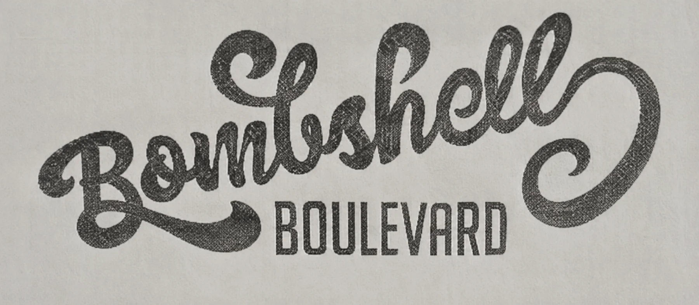
Logo Identity Case Study
Bombshell Boulevard
This text-based logo identity moves from hand drawn exploration to a finished fashion mark built around expressive custom lettering, supporting typography and flexible brand applications.
Back To Logos
01 / Exploration
Sketches & Early Ideas
Finding The Visual Language
The process started by exploring several directions for the name. The logo sketches underwent expressive script lettering, BB monograms and circular badge concepts. These sketches established the balance between feminine style, attitude and an urban edge.
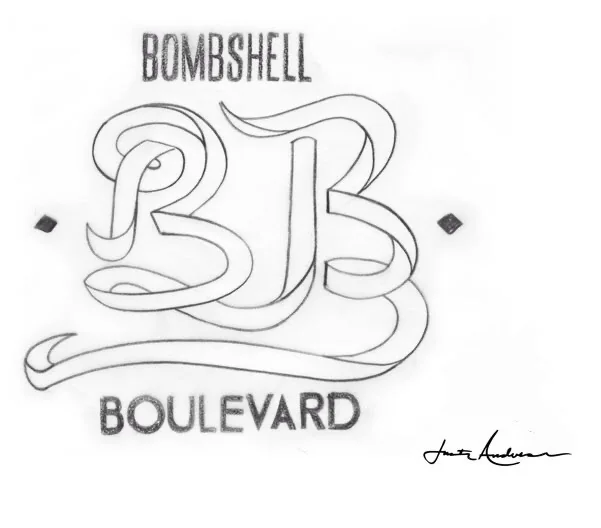
BB Monogram
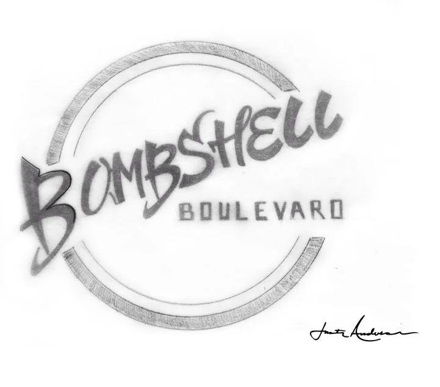
Circular Wordmark
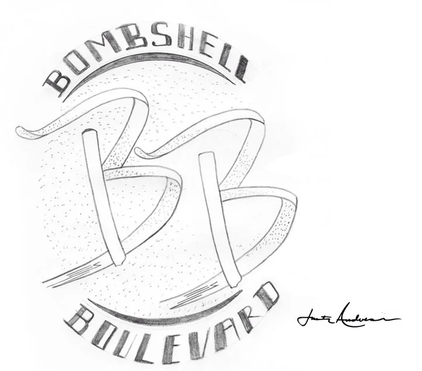
BB Circle Concept
02 / Development
Concept Refinement
From Sketch To Finished Direction
The strongest ideas moved into digital development. The custom Bombshell script became the personality of the identity while condensed Boulevard typography, distressed texture and badge elements were tested around it.
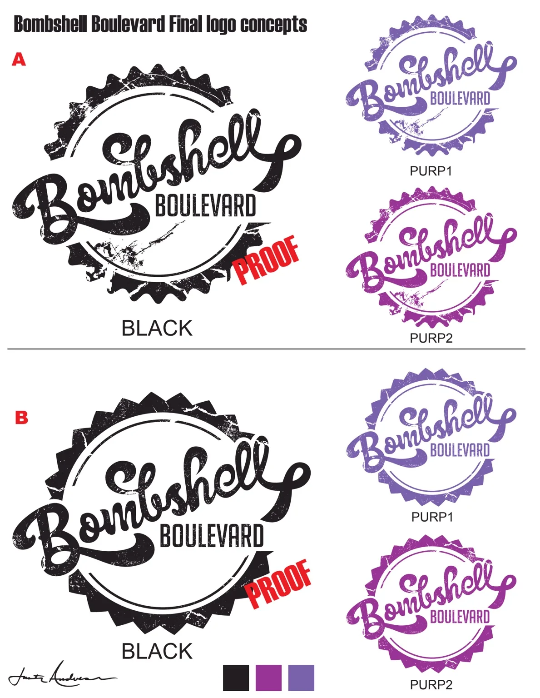
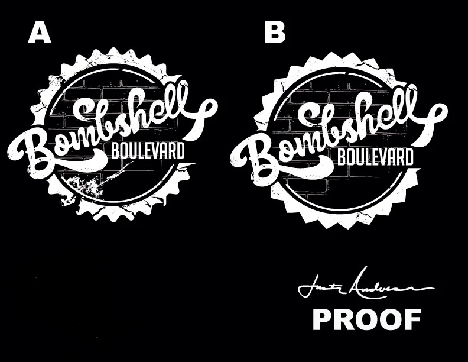
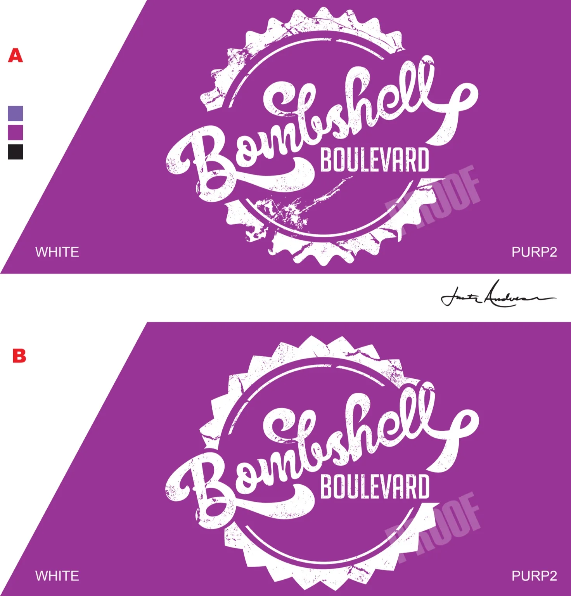
03 / FinalClientBombshell Boulevard Logo TypeText-Based Logo ServicesConcept, Lettering & Logo Design DeliverablesPrimary Logo, Variations & Brand Assets
Final Logo
The Finished Identity
The final Bombshell Boulevard mark combines expressive custom lettering with the structured Boulevard wordmark and distressed brick treatment. Multiple versions were prepared so the identity could stay consistent across light, dark and branded backgrounds.
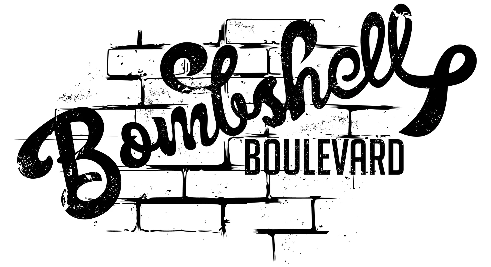
Black Logo
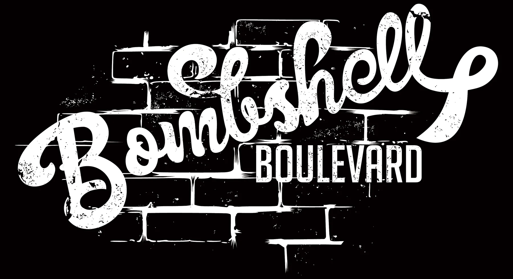
White Logo
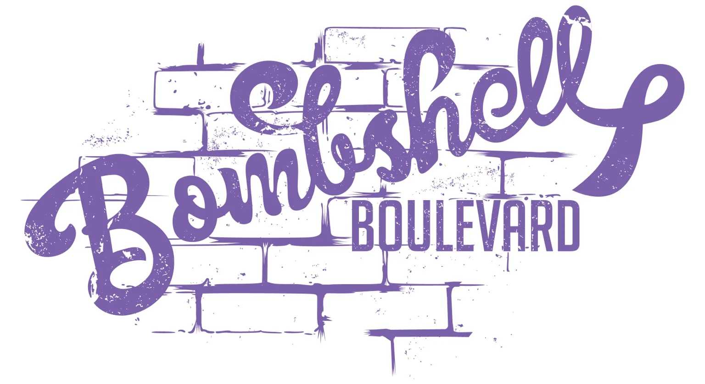
Purple 1
Purple 2
04 / Identity System
Color Specifications
Built For Consistent Use
The final system documents the black, white and two signature purple treatments with production values for both RGB and CMYK use.
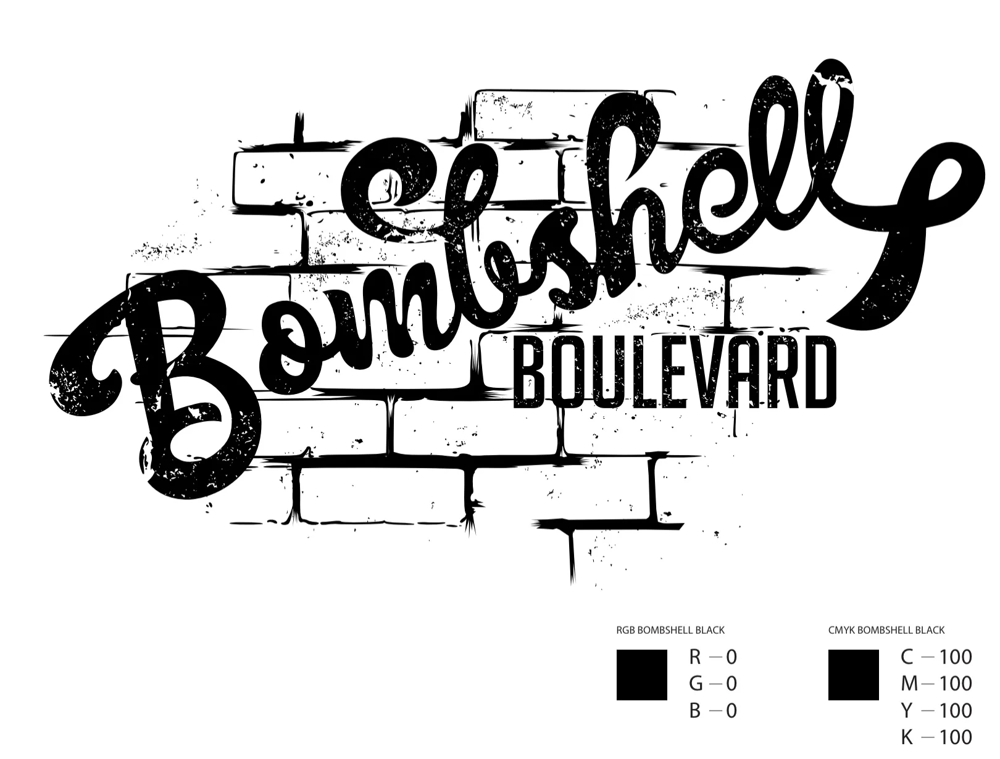
Black Specifications
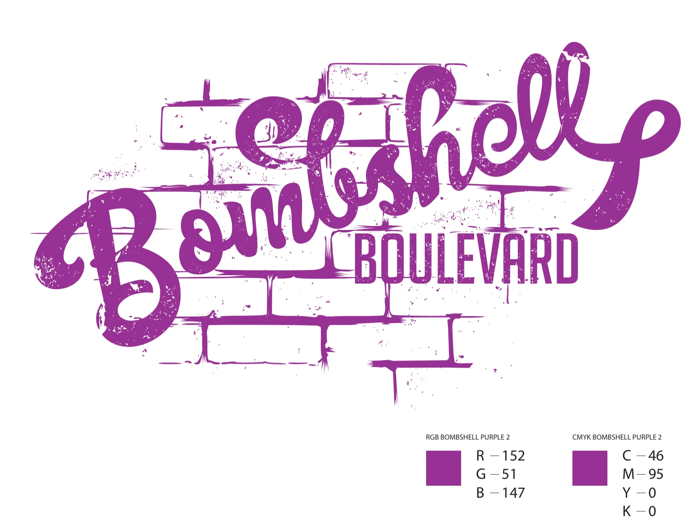
Purple 2 Specifications
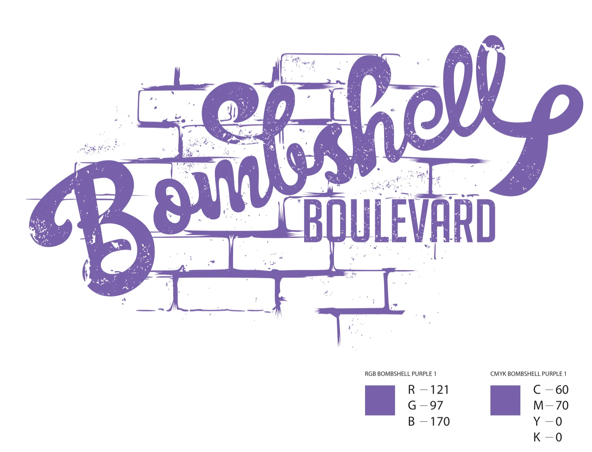
Purple 1 Specifications
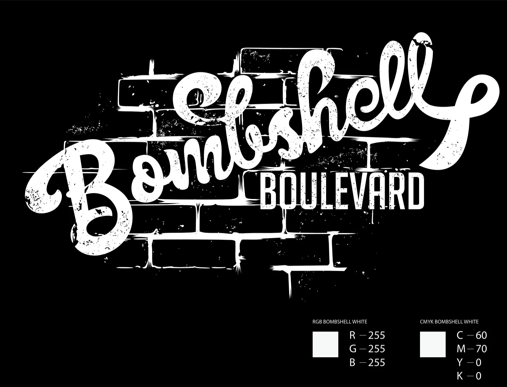
White Specifications
05 / Brand Applications
The Identity In Use
From Logo To Brand System
The finished identity was carried into practical brand materials, showing how the mark, colors and brick texture work together beyond the primary logo.
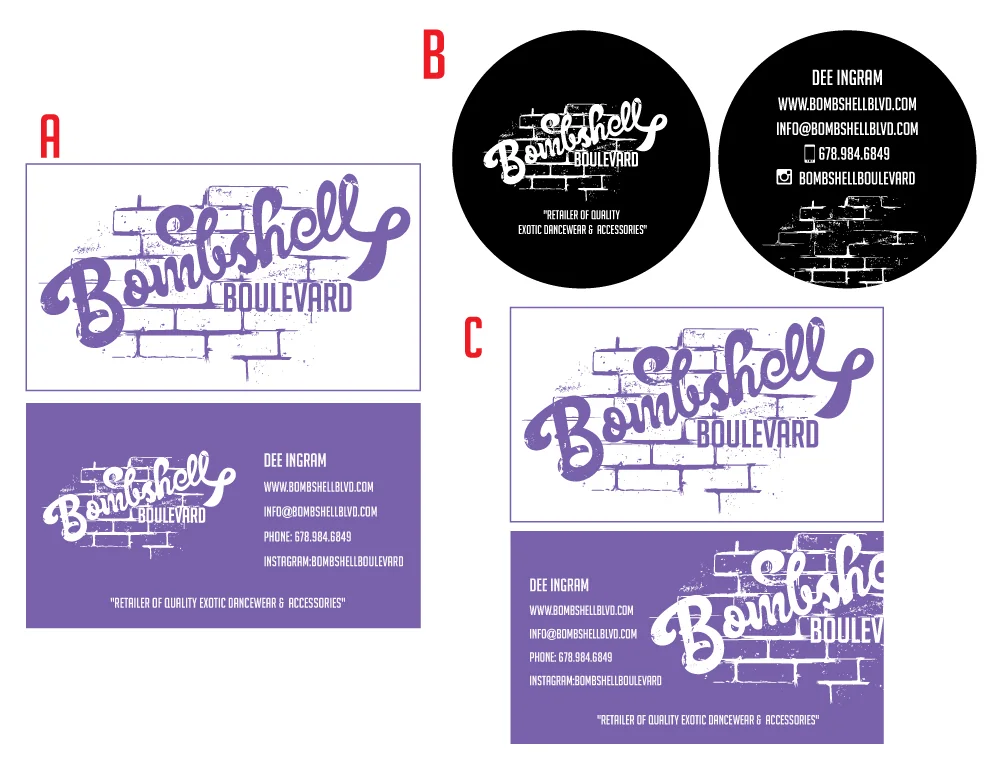
Business Cards
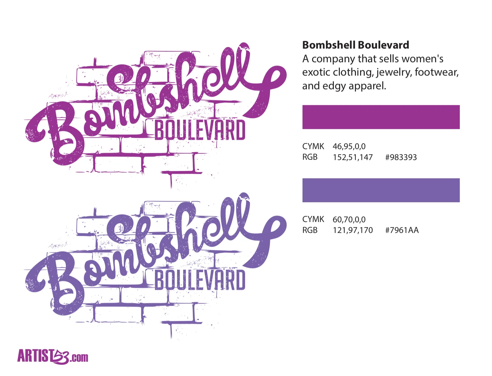